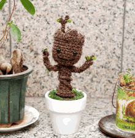

Crochetando com amor..


Crochê ou croché (crochet, francês: [kʁɔʃɛ]) é o processo de criação de tecidos usando a agulha de crochê e algum fio contínuo, normalmente, lã, fio de algodão, seda etc. Mas também pode se usar arame, barbante ou outro material inovador. O trabalho de crochê geralmente se inicia após uma sequência de pontos chamados de ponto corrente que são contados, o número de pontos podem ser números definidos, números pares ou ímpares ou números múltiplos de números específicos para assim obter o motivo, padrão ou da peça acabada. Durante a confecção é possível fazer aumentos e diminuições de modo a moldar o formato do trabalho.--- https://pt.wikipedia.org/wiki/Crochê